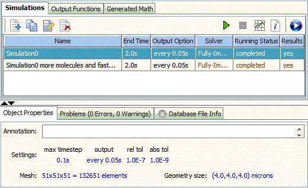

Simulations
You can run a simulation once you have defined your physiology and created an Application in a BioModel The model will be automatically saved upon running a simulation.
The Virtual Cell automatically converts the biological description defined in a
BioModel into a corresponding mathematical system of math equations (e.g. ordinary and/or partial differential).
The Virtual Cell will then solve the equations by applying numerical solvers to perform and analyze simulations. Afterwards Results can be displayed and analyzed on-line
or downloaded to the user’s computer in a variety of formats.
The Virtual Cell supports 5 categories of simulations.
- Deterministic non-spatial
- Stochastic non-spatial
- Deterministic spatial
- Stochastic spatial
- Hybrid stochastic spatial
The appropriate solver will automatically be chosen when a simulation is created.
For more details about numerics solvers used in these simulations, refer to Numerical Solvers.

On the Simulation panel, you create, edit and run your simulations as well as view the results.
Simulations that have been created are listed in the table. In this table, one can view some
of the simulation parameters among which some can be changed in place.
- Name: Simulation name must be unique throughout the BioModel. In another words, different applications in the same BioModel can not have simulations with the same name.
Double click on the Name field to change the name.
- End Time: This displays the duration of simulation in seconds.
- Output Option: Output Options determine how the simulation results are saved. Currently the Virtual Cell supports 3 output options: Keep every, Uniform and Explicit.
- Solver: This displays the numerical solver that has been chosen for current simulation. This can not be changed in the table.
- Running Status: This displays status (not saved, submitted, initializing, completed, etc) and progress of simulation.
- Results: Yes, results are available OR No, results are not available
Once a simulation is selected in the table, the properties of the selected simulation is displayed in the "Object Properties" Pane at the bottom.
This provides a quick review of simulation settings. Most parameters can be changed by editing the simulation.
- Annotation: Enter descriptive comments pertaining to the simulation directly in the Comments text field.
- Settings: This includes (max) time step, output option, relative tolerances, absolute tolerance, etc. Note different simulations and solvers have different settings.
For example, sensitivity analysis parameter is only available for non spatial simulations.
- Mesh/Geometry Size: Spatial models are simulated within a geometric mesh. The mesh specifies the number of points used to sample the geometry.
The geometry size is the domain size based on the geometry created or imported in the application. (see
Mesh)
- Parameters with values changed from default: the simulation panel allows you to modify parameter values in your simulation without modifying your model directly. If changes are made
they are indicated in red in this section of the simulation summary.

Here is the simulation tool bar. On the left are the controls that create/edit/delete the simulations. on the right are the controls that run/stop simulations and view the results.
Note most of buttons are only enabled when one or more simulations are selected. One can edit the name of a simulation by double-clicking on the Name field to select for editing. Pressing enter commits any edits to the simulation name.
On the left:
- New
 Creates a new simulation.
Creates a new simulation.
- Copy
 Makes a copy of selected simulation.
Makes a copy of selected simulation.
- Edit
 Opens the Simulation Editor
with additional runtime features required to complete a simulation: Parameters, Mesh, and Advanced tabs.
Opens the Simulation Editor
with additional runtime features required to complete a simulation: Parameters, Mesh, and Advanced tabs.
- Delete
 Deletes a selected simulation.
Deletes a selected simulation.
On the Right:
- Run
 Starts the simulation. Note the BioModel will be saved automatically
upon running a simulation.
Starts the simulation. Note the BioModel will be saved automatically
upon running a simulation.
- Stop
 Terminates the simulation.
Terminates the simulation.
- Results
 Once a simulation has started and/or is complete, press the
Results button to view the simulation results.
Once a simulation has started and/or is complete, press the
Results button to view the simulation results.
- Status Details
 This shows more detailed simulation status,
including submit date, start date, end date, etc. It’s more useful when the simulation has parameter scans, where it will
show the status of all the sub simulations.
This shows more detailed simulation status,
including submit date, start date, end date, etc. It’s more useful when the simulation has parameter scans, where it will
show the status of all the sub simulations.
- Quick Run
 Allows user to run completely on local.
Allows user to run completely on local.